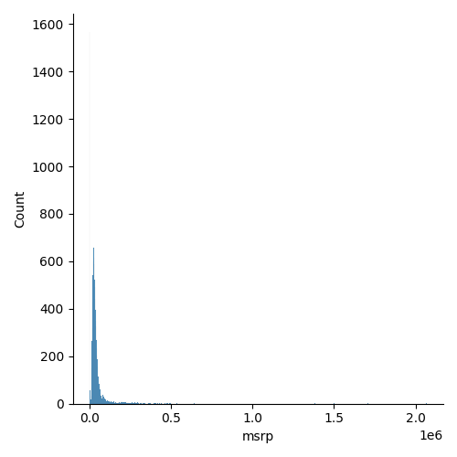
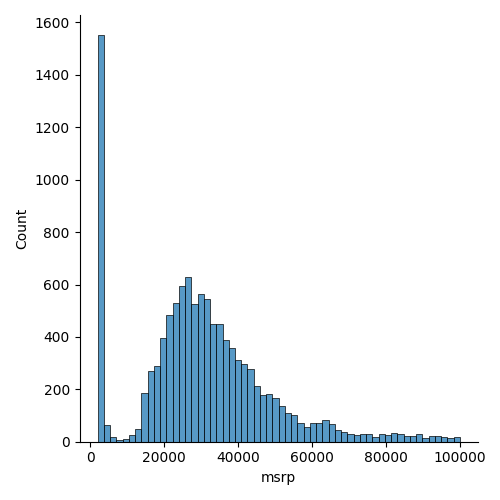
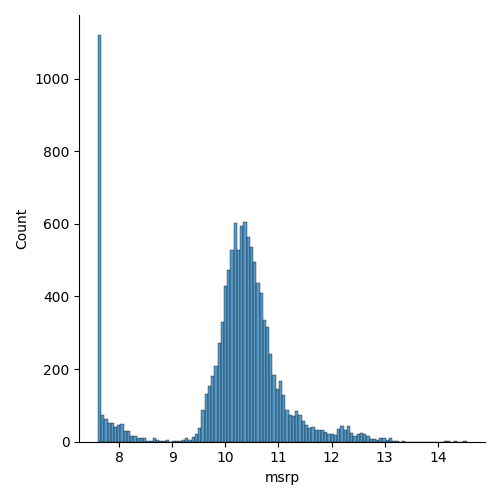
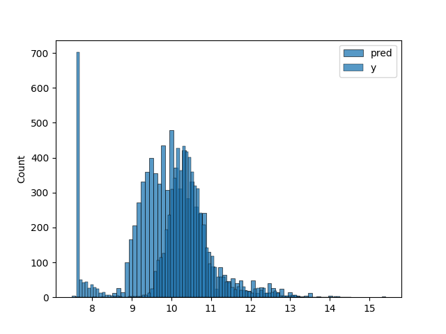
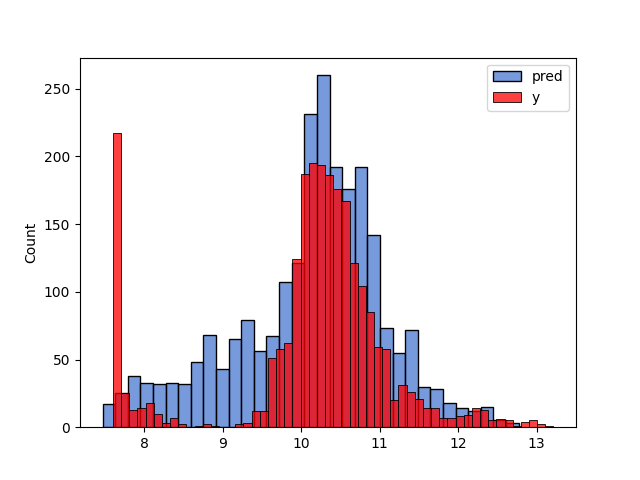

Deep Learning Bookcamp, ch. 2
Table of Contents
1 Setup
(pyvenv-workon "car-price-QhnioYpP-py3.8")
2 Predicting car prices
2.1 Imports
import pandas as pd import numpy as np from matplotlib import pyplot as plt import seaborn as sns
2.2 Reading and preparing the data
df = pd.read_csv('data.csv')
len(df)
11914
df.head()
Make Model Year Engine Fuel Type ... highway MPG city mpg Popularity MSRP 0 BMW 1 Series M 2011 premium unleaded (required) ... 26 19 3916 46135 1 BMW 1 Series 2011 premium unleaded (required) ... 28 19 3916 40650 2 BMW 1 Series 2011 premium unleaded (required) ... 28 20 3916 36350 3 BMW 1 Series 2011 premium unleaded (required) ... 28 18 3916 29450 4 BMW 1 Series 2011 premium unleaded (required) ... 28 18 3916 34500 [5 rows x 16 columns]
df.dtypes
Make object Model object Year int64 Engine Fuel Type object Engine HP float64 Engine Cylinders float64 Transmission Type object Driven_Wheels object Number of Doors float64 Market Category object Vehicle Size object Vehicle Style object highway MPG int64 city mpg int64 Popularity int64 MSRP int64 dtype: object
Cleaning up the data:
df.columns = df.columns.str.lower().str.replace(' ', '_')
string_columns = list(df.dtypes[df.dtypes == 'object'].index)
for col in string_columns:
df[col] = df[col].str.lower().str.replace(' ', '_')
df.head()
make model year engine_fuel_type engine_hp engine_cylinders transmission_type ... market_category vehicle_size vehicle_style highway_mpg city_mpg popularity msrp 0 bmw 1_series_m 2011 premium_unleaded_(required) 335.0 6.0 manual ... factory_tuner,luxury,high-performance compact coupe 26 19 3916 46135 1 bmw 1_series 2011 premium_unleaded_(required) 300.0 6.0 manual ... luxury,performance compact convertible 28 19 3916 40650 2 bmw 1_series 2011 premium_unleaded_(required) 300.0 6.0 manual ... luxury,high-performance compact coupe 28 20 3916 36350 3 bmw 1_series 2011 premium_unleaded_(required) 230.0 6.0 manual ... luxury,performance compact coupe 28 18 3916 29450 4 bmw 1_series 2011 premium_unleaded_(required) 230.0 6.0 manual ... luxury compact convertible 28 18 3916 34500 [5 rows x 16 columns]
- Notes:
df.dtypesgives a list of types,df.dtypes[df.dtypes ='object']= lists only those that have the given type.df.dtypes.indexgives an Index object listing all the relevant columns.- The
strattribute makes it possible to apply string operations to all the elements in the column at once.
sns.displot(df.msrp, kde=False)
plt.savefig('figures/figure2-1.png')
'figures/figure2-1.png'

sns.displot(df.msrp[df.msrp < 100000], kde=False)
plt.savefig('figures/figure2-2.png')
'figures/figure2-2.png'

This kind of distribution is difficult for machine learning algorithms, esp. linear regression, because of the long tail of high prices, which occur relatively rarely, but must still be learned.
The common solution in such cases is to apply a logarithm transformation to the target value:
ynew = log(y+1)
Adding 1 to the original target value avoids calculating log(0) = -∞. Numpy has
a function for this purpose, np.log1p:
log_price = np.log1p(df.msrp)
sns.displot(log_price)
plt.savefig('figures/figure2-3.png')
'figures/figure2-3.png'

This so-called "normal or Gaussian distribution" is more amenable to machine learning algorithms.
df.isnull().sum()
make 0 model 0 year 0 engine_fuel_type 3 engine_hp 69 engine_cylinders 30 transmission_type 0 driven_wheels 0 number_of_doors 6 market_category 3742 vehicle_size 0 vehicle_style 0 highway_mpg 0 city_mpg 0 popularity 0 msrp 0 dtype: int64
2.3 Setting up the validation framework
2.3.1 Splitting the data into a train, a validation and a test set
- 20% for validation
- 20% for testing
- 60% for training
n = len(df) n_val = int(0.2 * n) n_test = int(0.2 * n) n_train = n - (n_val + n_test) np.random.seed(2) idx = np.arange(n) np.random.shuffle(idx) df_shuffled = df.iloc[idx] df_train = df_shuffled.iloc[:n_train].copy() df_val = df_shuffled.iloc[n_train:n_train+n_val].copy() df_test = df_shuffled.iloc[n_train+n_val:].copy()
We still need to apply the log transformation:
y_train = np.log1p(df_train.msrp.values) y_val = np.log1p(df_val.msrp.values) y_test = np.log1p(df_test.msrp.values)
The target value should be removed from the dataframes, just in case:
del df_train['msrp'] del df_val['msrp'] del df_test['msrp']
2.3.2 Training the model
- Linear regression
Computing the weights
wcan be done with the "normal equation":w = (XT·X)-1·XT·y
where:
- X is a matrix of input features
- y is a vector of target values
- XT is the transpose of X (
4X.Tin Numpy) - X-1 is the inverse of X (
np.linalg.invin Numpy)
The dot product in Numpy is obtained with the
dot()method. Thus, the formula above becomes:w = inv(X.T.dot(X)).dot(X.T).dot(y)
- Implementing the normal equation
In Python:
def linear_regression(X, y): # X: matrix of features # y: vector of target values # Add a dummy column to accommodate the bias. ones = np.ones(X.shape[0]) X = np.column_stack([ones, X]) # Normal equation formula XTX = X.T.dot(X) XTX_inv = np.linalg.inv(XTX) w = XTX_inv.dot(X.T).dot(y) # Split the bias and the weights return w[0], w[1:] - Predicting the price: baseline solution
We select a few features to illustrate how things work:
base = ['engine_hp', 'engine_cylinders', 'highway_mpg', 'city_mpg', 'popularity'] df_num = df_train[base] df_num.head()
engine_hp engine_cylinders highway_mpg city_mpg popularity 2735 148.0 4.0 33 24 1385 6720 132.0 4.0 32 25 2031 5878 148.0 4.0 37 28 640 11190 90.0 4.0 18 16 873 4554 385.0 8.0 21 15 5657Replace any missing values with 0:
df_num = df_num.fillna(0)
This may not be the best way to deal with missing values, but it works.
I guess what's not so great about it is that it reduces a term to zero in the equation, causing the predicted price to be lower than one might expect. This is the formula for predicting the price:
g(x) = w0 + x1w1 + x2wnil2 + x3w3 + …
Now if one feature is set to 0, the total sum g(x) is lower than it would have been if the feature were not 0. A better solution might be to set unknown features to the mean of that feature across all samples. That way the feature still exerts its influence on the total price.
For example, if
city_mpgis unknown, we may still assume that it isn't zero. Setting it to zero would drive down the estimated price unreasonably. (Or drive it up, depending on the relevant weight.)Convert the data frame to a Numpy array. This is an important step, as the data frame cannot be fed to the function
linear_regression:X_train = df_num.values
Now train the model:
w_0, w = linear_regression(X_train, y_train)
Note: Training the model means calculating the weights (well, duh!) Here, the weights can simply be calculated, but formally it's still training.
Applying the model to the training data:
y_pred = w_0 + X_train.dot(w)
And plot the result:
plt.clf() sns.histplot(y_pred, label='pred') sns.histplot(y_train, label='y') plt.legend() plt.savefig('figures/figure2-4.png') 'figures/figure2-4.png'
Note: the predicted and the actual values are quite a bit apart. This is due to the fact that the predictions here are based on only five features.
The book uses
sns.distplot(), which however gives a deprecation warning. One should usesns.displot()orsns.histplot()instead, but only the latter seems to allow overlaying two plots. - Evaluating the model: Root Mean Square Error
The Root Mean Square Error (RMSE) is a common measure for the quality of a model:
\[ \mathrm{RMSE} = \sqrt{\frac{1}{m}\sum_{i=1}^{m}(g(x_{i})-y_{i})^{2}} \]
RMSE in Python using Numpy:
def rmse(y, y_pred): # y: array of target values # y_pred: array of predicted values error = y_pred - y mse = (error ** 2).mean() return np.sqrt(mse)Note: Numpy does array operations.
yandy_predare arrays, which means thaterroris, as well.Computing the RMSE for the current model:
rmse(y_train, y_pred)
0.7554192603920132
To compare the model with others, this measure should be computed on the validation set, not the training set:
# Create the matrix of validation samples X_val: df_num = df_val[base] df_num = df_num.fillna(0) X_val = df_num.values # Apply the model: y_pred = w_0 + X_val.dot(w) # Compute RMSE; rmse(y_val, y_pred)
0.7616530991301577
To make this more easily repeatable:
def prepare_X(df): df_num = df[base] df_num = df_num.fillna(0) X = df_num.values return Xprepare_Xcreates a matrix from a data frame. Training and evaluation are now simpler:X_train = prepare_X(df_train) w_0, w = linear_regression(X_train, y_train) X_val = prepare_X(df_val) y_pred = w_0 + X_val.dot(w) print('validation:', rmse(y_val, y_pred))validation: 0.7616530991301577
- Simple feature engineering
We can add new features based on the existing features. For example, the year a car is produced is only a good predictor of price if it's interpreted as the age of a car.
df_train.year.max()gives the newest car in the data set, which is 2017. Subtract the year of a car from 2017 to get its age.def prepare_X(df): df = df.copy() features = base.copy() df['age'] = 2017 - df.year features.append('age') df_num = df[features] df_num = df_num.fillna(0) X = df_num.values return XTraining and evaluation can now be done as follows:
X_train = prepare_X(df_train) # Prepare the data. w_0, w = linear_regression(X_train, y_train) # Training the model. X_val = prepare_X(df_val) # Apply the model to the validation set. y_pred = w_0 + X_val.dot(w) print('validation:', rmse(y_val, y_pred)) # Compute RMSE of the validation datavalidation: 0.5172055461058327
Plotting the distribution of the predicted values:
plt.clf() sns.histplot(y_pred, label='pred') sns.histplot(y_val, label='y', color="red") plt.legend() plt.savefig('figures/figure2-5.png') 'figures/figure2-5.png'
- Categorical features
Categorical features are features that take one of a limited set of values. These are often strings, but may be numerical, as the number of doors of a car (2, 3, or 4).
One way to handle categorical features in a model is to include a set of binary features, one for each distinct value (called one-hot encoding). We can do this in the
prepare_Xfunction:def prepare_X(df): """Prepare a data frame for ML. :param df: data frame of features :returns: feature matrix""" # Copy the data frame and the features. df = df.copy() features = base.copy() # Add some features df['age'] = 2017 - df.year features.append('age') for v in [2, 3, 4]: feature = 'num_doors_%s' % v value = (df['number_of_doors'] == v).astype(int) df[feature] = value features.append(feature) # Create a new data frame with only the features and add any missing features as 0. df_num = df[features] df_num = df_num.fillna(0) # Extract the values into a matrix and return the result. X = df_num.values return XI'm not sure when a comparison can be turned into an integer…
True.astype(int)returns an error, and so does(1==0).astype(int), but for some reason,(df['number_of_doors'][0] =2).astype(int)= returns1.Note that
(df['number_of_doors'] =v)= is an array operation: it returns a Pandas series of boolean values.Doing the same for the feature make, taking only the five most frequently occurring values:
def prepare_X(df): """Prepare a data frame for ML. :param df: data frame of features :returns: feature matrix""" # Copy the data frame and the features. df = df.copy() features = base.copy() # Add some features df['age'] = 2017 - df.year features.append('age') for v in [2, 3, 4]: feature = 'num_doors_%s' % v value = (df['number_of_doors'] == v).astype(int) df[feature] = value features.append(feature) for v in ["chevrolet", "ford", "volkswagen", "toyota", "dodge"]: feature = 'is_make_%s' % v df[feature] = (df['make'] == v).astype(int) features.append(feature) # Create a new data frame with only the features and add any missing features as 0. df_num = df[features] df_num = df_num.fillna(0) # Extract the values into a matrix and return the result. X = df_num.values return XSee if it works:
X_train = prepare_X(df_train) # Prepare the data. w_0, w = linear_regression(X_train, y_train) # Training the model. X_val = prepare_X(df_val) # Apply the model to the validation set. y_pred = w_0 + X_val.dot(w) print('validation:', rmse(y_val, y_pred)) # Compute RMSE of the validation datavalidation: 0.5076038849556838
Adding some more categorical features:
def prepare_X(df): """Prepare a data frame for ML. :param df: data frame of features :returns: feature matrix""" # Copy the data frame and the features. df = df.copy() features = base.copy() # Add some features df['age'] = 2017 - df.year features.append('age') for v in [2, 3, 4]: feature = 'num_doors_%s' % v value = (df['number_of_doors'] == v).astype(int) df[feature] = value features.append(feature) for v in ["chevrolet", "ford", "volkswagen", "toyota", "dodge"]: feature = 'is_make_%s' % v df[feature] = (df['make'] == v).astype(int) features.append(feature) for v in ['regular_unleaded', 'premium_unleaded_(required)', 'premium_unleaded_(recommended)', 'flex-fuel_(unleaded/e85)']: feature = 'is_type_%s' % v df[feature] = (df['engine_fuel_type'] == v).astype(int) features.append(feature) for v in ['automatic', 'manual', 'automated_manual']: feature = 'is_transmission_%s' % v df[feature] = (df['transmission_type'] == v).astype(int) features.append(feature) for v in ['front_wheel_drive', 'rear_wheel_drive', 'all_wheel_drive', 'four_wheel_drive']: feature = 'is_driven_wheels_%s' % v df[feature] = (df['driven_wheels'] == v).astype(int) features.append(feature) for v in ['crossover', 'flex_fuel', 'luxury', 'luxury,performance', 'hatchback']: feature = 'is_mc_%s' % v df[feature] = (df['market_category'] == v).astype(int) features.append(feature) for v in ['compact', 'midsize', 'large']: feature = 'is_size_%s' % v df[feature] = (df['vehicle_size'] == v).astype(int) features.append(feature) for v in ['sedan', '4dr_suv', 'coupe', 'convertible', '4dr_hatchback']: feature = 'is_style_%s' % v df[feature] = (df['vehicle_style'] == v).astype(int) features.append(feature) # Create a new data frame with only the features and add any missing features as 0. df_num = df[features] df_num = df_num.fillna(0) # Extract the values into a matrix and return the result. X = df_num.values return XChecking out the effect:
X_train = prepare_X(df_train) # Prepare the data. w_0, w = linear_regression(X_train, y_train) # Train the model. X_val = prepare_X(df_val) # Apply the model to the validation set. y_pred = w_0 + X_val.dot(w) print('validation:', rmse(y_val, y_pred)) # Compute RMSE of the validation datavalidation: 22.322123465036622
Adding these features makes the model much worse, not better.
- Regularization
The reason for the deterioration is numerical instability. The bias is very large and so are some of the weights:
print('bias: %s\nweights: %s' % (w_0, w))bias: 8991164041495205.0 weights: [-4.95981777e-02 6.73670308e+00 9.40777511e-01 -2.58497309e+00 3.72822950e-03 -5.20036150e-01 -1.40699123e+03 -1.39430142e+03 -1.39683545e+03 -5.60490940e+00 -2.27794179e+01 1.73041774e+01 -4.30960052e+00 -9.23053458e+00 5.11353883e+01 5.56224498e+01 4.86289752e+01 5.76621679e+01 -2.18304488e+02 -2.07996848e+02 -2.72177915e+02 -8.99116404e+15 -8.99116404e+15 -8.99116404e+15 -8.99116404e+15 6.13723252e+00 6.05470595e+00 -1.21844079e+00 3.04348851e+00 1.20577703e+00 -2.16182997e+01 -2.60265778e+01 -2.38977036e+01 -7.67460186e-02 4.14645821e-02 1.86187511e-01 3.55798979e-01 -2.14066472e-01]
The underlying cause of the problem is that the feature matrix becomes singular or undetermined. This can happen when two features are essentially the same, e.g., if there's a feature "miles per gallon" and you then add a feature "kilometers per liter".
Technically, the matrix produced here is not singular, but the large bias and weights indicate it's close.
This numerical instability can be solved using regularization techniques. One way to do regularization is to add a small number to each diagonal element of the matrix. The formula for linear regression then becomes:
w = (XT·X+αI)-1·XT·y
I is an identity matrix, α a constant. In Numpy:
XTX = X_train.T.dot(X_train) XTX = XTX + 0.01 * np.eye(XTX.shape[0])
Here, α is set to
0.01. The functionnp.eye()creates a 2D identity matrix:0.01 * np.eye(4)
0.01 0 0 0 0 0.01 0 0 0 0 0.01 0 0 0 0 0.01 Linear regression with regularization:
def linear_regression_reg(X, y, r=0.01): ones = np.ones(X.shape[0]) X = np.column_stack([ones, X]) XTX = X.T.dot(X) reg = r * np.eye(XTX.shape[0]) XTX = XTX + reg XTX_inv = np.linalg.inv(XTX) w = XTX_inv.dot(X.T).dot(y) return w[0], w[1:]A grid search suggests that values around 0.01 are fine. Smaller values do reduce the RMSE, but only marginally.
X_train = prepare_X(df_train) w_0, w = linear_regression_reg(X_train, y_train, r=0.01) X_val = prepare_X(df_val) y_pred = w_0 + X_val.dot(w) print('validation:', rmse(y_val, y_pred)) X_test = prepare_X(df_test) y_pred = w_0 + X_test.dot(w) print('test:', rmse(y_test, y_pred))validation: 0.46023949630840544 test: 0.45718136795913034
The results suggest that the model works well.
Still, I'm not clear on whether the value of ≈0.46 is good or not. Does it mean the model predicts the price well or not?
- Using the model
When using the model to make a prediction, one needs to create a data frame with one row. Take the following ad for a car:
ad = { 'city_mpg' : 18, 'driven_wheels' : 'all_wheel_drive', 'engine_cylinders' : 6.0, 'engine_fuel_type' : 'regular_unleaded', 'engine_hp' : 268.0, 'highway_mpg' : 25, 'make' : 'toyota', 'market_category' : 'crossover,performance', 'model' : 'venza', 'number_of_doors' : 4.0, 'popularity' : 2031, 'transmission_type' : 'automatic', 'vehicle_size' : 'midsize', 'vehicle_style' : 'wagon', 'year' : 2013 }Converting this to a data frame and a matrix:
df_ad = pd.DataFrame([ad]) X_test = prepare_X(df_ad)
Applying the model yields a value that is the logarithm of the predicted price. To calculate the price, apply the exponent function:
y_pred = w_0 + X_test.dot(w) suggestion = np.expm1(y_pred) print('suggested price: $%d' % round(suggestion[0]))suggested price: $28294